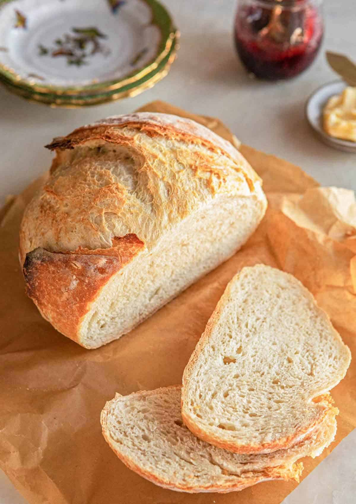

Homeade Bread Recipes
The basic process of making homeade bread involves mixing together flour, liquid, salt, sugar, fat, eggs and sometimes yeast. The mixture must be kneaded until the flour in converted into a stiff paste or dough. Following, each dough, depending on the recipe, will bake at different temperatures and durations.
Bread Making Steps
- Make the dough mixture.
- Knead the dough.
- Cover the dough and let it rise.
- Punch dough to release air.
- Shape the dough and roll it into a loaf.
- Let loaf rise for an hour.
- Bake for 35-40 minutes until golden brown.
Basic Artisian Bread
This artisan bread is easy, but even bread masters will appreciate its taste and ease. Follow the recipe below for an easy, quick recipe that will be a fan favorite in your family. Add butter or any toppings you desire!
- Step 1: Mix together bread flour, instant yeast, salt and water
- Step 2: Let the dough sit and rise at room temperature for 2-3 hours
- Step 3: After 2-3 hours, immediately form the dough in the shape that you please
- Step 4: Finally, bake for 25-30 minutes until golden brown